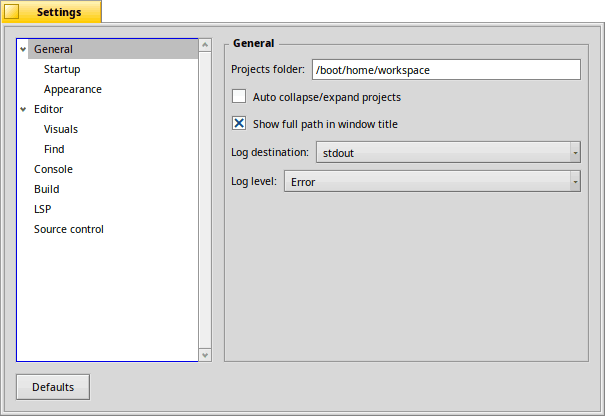
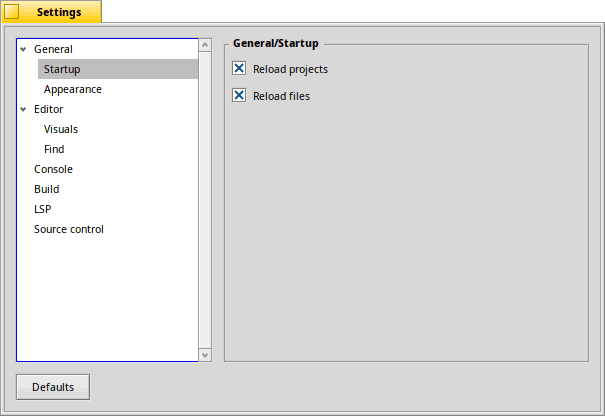
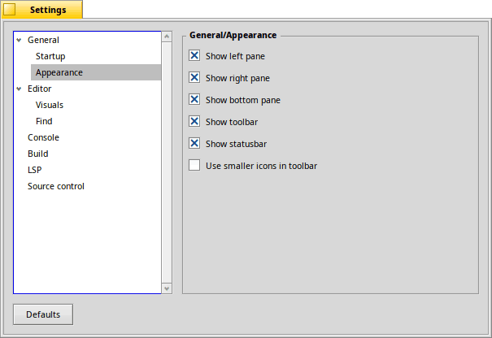
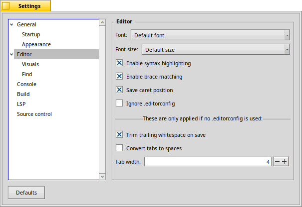
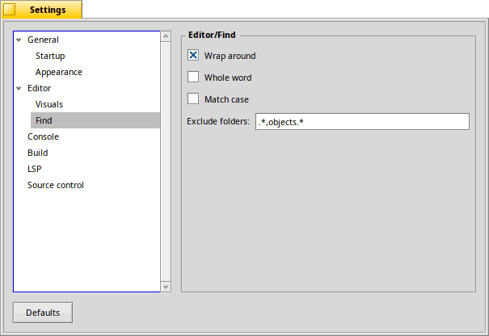
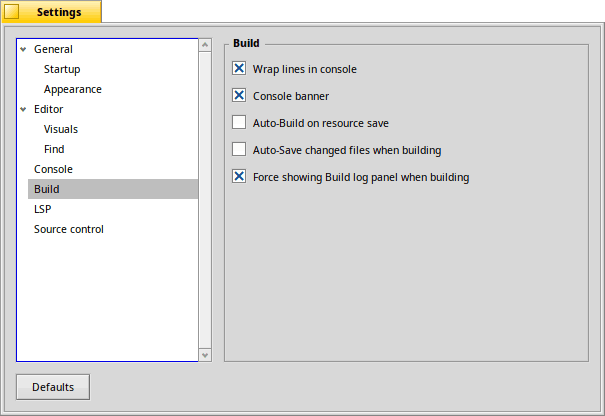
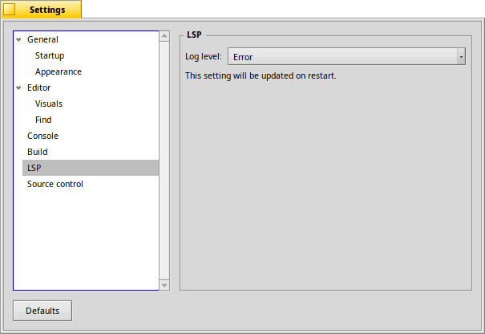

| Index |
|
General ┗━ Startup ┗━ Appearance Editor ┣━ Visual ┗━ Find Build LSP Source control |
The Genio Settings
From the list on the left, you choose the different settings categories.
will reset all settings to their defaults.
 General
General

| This sets the default location for newly created projects. | |
| Genio will automatically expand a project you set to "active" and collapse the other currently open projects. | |
| Shows the full path or just the name of the current file. | |
| Sets where Genio's log output gets written: , , or (see here). | |
| Sets the verbosity of Genio's log output. After it gets increasingly detailed: , , and . |
General / Startup

These settings determine how Genio will behave on startup. You decide if the projects and files that were open when you last quit Genio are reloaded when it launches.
General / Appearance

These settings determine Genio's default look. Besides setting which panes and bars are shown by default when Genio launches, you can also opt to to save precious space.
Editor

| You can set a font family and size if the system defaults don't work for you. | |
| Colors keywords etc. and highlights opening/closing braces. | |
| Genio will remember the cursor position when you close and re-open a file. | |
| Opt out of code formatting by EditorConfig (if your project uses that). |
The rest of the settings are only applied if no .editorconfig is being used. That is, you either have the above checked, or your project simply doesn't use EditorConfig.
| Automatically removes those pesky spaces and tabs at the end of lines when you save a file. | |
| While active, entered tabs are replaced with spaces. Tabs that are already in a file are not replaced. | |
| Sets the width of tabs in spaces. |
Editor / Visual

| Choose from a number of different color themes for the editor view. | |
| Toggles the margins on the left (see Elements of the editor view). | |
| Highlights the current line of the cursor. | |
| Shows symbols for spaces and tabs. This can also be toggled from the menu or the toolbar. | |
| Shows symbols for line breaks – LF, CRLF, CR, depending on the setting of the file. This can also be toggled from the menu. | |
| Wraps lines that are longer than the editor view's width. This can also be toggled from the menu or the toolbar. | |
| Draws a vertical line at the column you set with the spinner below. It helps you keeping a limit on characters per line. | |
| Sets the default zoom of the editor view. It can easily be overridden with the commands in the View menu or by ALT + mousewheeling. |
Editor / Find

The checkboxes set the defaults for The Find bar.
| Continue the search at the beginning of the file when it has reached the end (and vice-versa, if you reverse the direction by jumping to the previous match). | |
| Does not find partial matches. | |
| Respect upper and lower-case. | |
| A comma separated list of folders that will be ignored when searching. Use '*' as wildcard. |
Build

| Wraps lines in the Console I/O tab of the output pane. | |
| Prints the executed command at the start and end of the build process in the Console I/O tab of the output pane. | |
| Builds the project automatically if changes to any of its files are saved. | |
| Saves all changed files automatically when a build was started. |
LSP

LSP is Clang's language server protocol. Genio uses it for autocompletion, signature help, jumping to definition / implementation / declaration, quick fix, etc. Please also have a look at Configuring clang's LSP.
| Sets the verbosity of LSP's log output. It gets increasingly detailed: , and . |
You'll have to restart Genio for changes to take effect.
Source control
| Shows the branches of the project's repository in a hierarchical structure. |
Back: Settings Next: Project Settings